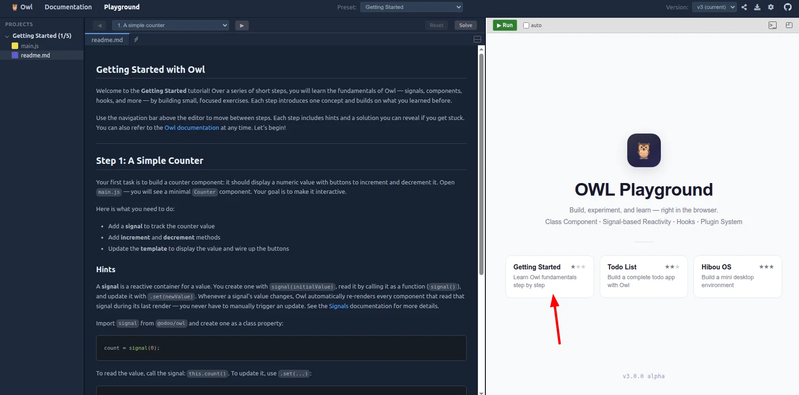
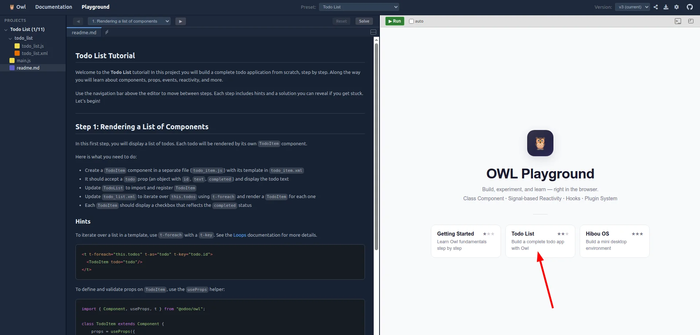

Welcome
Before you arrive
What you need
Before you arrive
Setup
Prepare an odoo.sh project now, before Day 1.
How we work
Ask questions, at any point
This training is for you. Interrupt whenever something is unclear, interesting, or worth challenging.
javascript Masterclass · Odoo Experience 2026
The Odoo JS ecosystem
A quick overview of the Odoo javascript codebase.
Rule one
The first rule of customizing Odoo in javascript is…
Rule one · Before reaching for javascript
Do it in Python.
The server is usually the simpler, safer extension point.
Decision guide
When javascript is the right answer
The rule has exceptions.
The landscape
Javascript in Odoo
Three entry points, three addons. Every app is built on one of them.
Architecture
Two ways of rendering
Addon anatomy
Anatomy of an addon
Assets
Assets and bundles
Assets
No build step
Modules
Javascript modules
Architecture
The JS Stack
The framework
New in Odoo 20: Owl 3
Odoo is moving from Owl 2 to Owl 3. It landed in saas-19.4, Odoo 20 runs on it, and it is a separate library rather than a superset: Owl 3 does not run Owl 2 code.
Migration
Owl 2 to Owl 3
Templates
QWeb, two engines
QWeb is an XML templating language: directives are attributes on ordinary tags. One syntax, two engines that read it.
Topic 1 · Owl
Building an application
Lists, state, and where the logic lives.
Topic 1 · Owl
Goals
The first deck was the syntax. This one is the architecture.
Lists
A list of components
t-foreachover the data, one child component per item.t-keyis how Owl tells the items apart between two renders. Never skip it.
Lists
When push renders nothing
A plain array is not reactive. Owl has no way to know it changed.
signal.Arrayandsignal.Objecttrack their own content:push,splice, a key set or deleted.
Lists
Reactive data inside the list
Ticking the checkbox changes nothing: completed is a plain boolean, one level below what signal.Array tracks.
- A signal is a value. It can sit in an object, be passed as a prop, be bound with
t-model.
Refs
Reaching the DOM
signal.ref()plust-ref: the element lands in the signal once mounted.- Before mounting it is
null, which is why the DOM is touched inonMounted.
Refs
Writing your own hook
- A plain function that calls other hooks, named
use…by convention. - It is how behaviour is shared between components, without a base class.
Callback props
Talking to the parent
The child displays a todo, but the parent owns the list. So the parent deletes, and the child asks.
Picking one
Reacting to a change
Both track the signals they read, and run again when those change. The difference is what you want out of them.
Plugins
Sharing state and logic between components
A component renders. Everything else, the data and the rules, belongs somewhere a second component can reach.
Plugins
A plugin, in code
providePluginsat the top, once: it opens the plugins to that component and its children.usePluginanywhere below, in a component or in a plugin.
Picking one
Four ways to be reactive
One dependency tracker underneath, four shapes on top. Pick by the shape of your data.
Topic 1 · Owl
An introduction to Owl 3
Components, signals, templates, props, hooks.
Topic 1 · Owl
Goals
Topic 1 · Owl
What is Owl?
A JavaScript framework, in the family of React and Vue.
Components
A Counter component
A component is a class and a template.
Components
Rendering context
A template has a context of its own. At first it only holds the component, reached through this.
Reactivity
Signals
- A value of its own: call it to read,
setit to write. There is noget. - Fine grained: a component follows the signals it reads, and re-renders when one changes.
Components
Event handling
The t-on- directive takes any event name: t-on-click, t-on-keydown, t-on-input.
Templates
Template syntax
QWeb, plus what a component needs.
Components
Sub components
A component is a unit you reuse: its JavaScript, its template, its CSS.
Components
Props, and their validation
- The parent passes data down. The child never writes to it.
usePropsdeclares the shape. A missing or wrong prop fails loudly, in dev mode.
Reactivity
Derived values: computed
- A value built from other signals, read like a signal:
this.isValid(). - Recomputed on its own, only when what it read has changed.
t-modelbinds an input to a signal, both ways.
Hooks
The lifecycle, and its hooks
Owl
odoo.github.io/owl
The documentation, the playground and the source. Everything in this topic, in reference form.
Topic 1 · Owl
Generic components
A component whose content is somebody else's: slots.
Slots
Content the caller writes
- A
Carddraws the frame. What goes inside is different at every call site. - Props pass data down: a string, a number, a record. They cannot pass a paragraph and a button with a handler on it.
Slots
A slot is a hole in a template
- The generic component says where the content goes, with
t-call-slot. The caller says what it is.
Slots
Named slots, and optional ones
t-set-slotnames a piece of content. Everything left over is thedefaultslot.- What the caller gave you is readable:
this.props.slots, keyed by slot name.
Topic 2 · Part 2
Plugins
The code that outlives a screen, and what has to be loaded before the first render.
Services
Plugins and services
A component is created and destroyed with its screen. A service is started once, with the web client, and outlives every screen.
- State that must survive a screen change, or be shared between two of them, belongs in a service.
Services
The ones already there
Before writing one, know what the framework already started for you.
Services
Defining a plugin
- A class extending
Plugin, and one line to start it with the web client. Nothing else refers to it.
Services
A plugin that only does something
It holds no state and nobody reads it. It exists because the web client started it.
Services
Reaching one from a component
usePlugin(Class)hands back the instance, with everything on it: the class you imported is the documentation.
Data
Loading before the first render
onWillStartruns once, before the component is rendered. The screen waits for the promise.- Owl renders the whole tree in one pass: every branch waits, then the DOM is touched once.
Topic 2 · Part 1
JS Framework 101
What addons/web gives you, and how your code plugs into it.
Topic 2 · The Odoo JS framework
Goals
Owl gave you components. This topic is the application they live in.
The web client
Building blocks
Three layers, and the names you will keep meeting. Your addon writes the top one.
The web client
Web client
The web client is an ordinary Owl component. Everything on screen hangs below it.
Registries
Extending the web client
The primary extension mechanism: every addon registers what it adds, and the web client picks it up.
Registries
Registries
- The primary extension point: an addon registers something, the web client picks it up.
- One global
registry, split into categories. Asequencekeeps an order when order matters.
Registries
The ones you will use
Registries
Registry and Resource, in Owl 3
- The global
registryis Odoo's own, and still holds every category above. Owl 3 ships two of its own, and new code uses those. - Each one is a plain object, declared and exported where it belongs. No string category to spell right, and the type is checked on the way in.
Client actions
Everything on screen is an action
A menu item points at an action record. The type of that record decides who renders it.
Client actions
Window actions
- Far and away the most common one: nearly every menu in Odoo opens an
act_window. - The xml below is not read at runtime: installing the addon writes a row in
ir_actions. The UI lives in the database, which most frameworks do not do. - It names a model and a list of view types. The web client loads those views and renders the first, with a switcher for the rest.
Client actions
Client Actions
- A record in Python names the action; the registry says which component renders it.
Layoutgives your screen the control panel every other screen has.
Data
Talking to the server
The browser has no database: every piece of data is a request, and your Python method is the API.
Topic 3 · Part 2
Customizing views and fields
Changing what a standard field or view does, without forking it.
Customizing views
Two strategies: monkey-patching, or subclassing.
Customizing views
Which one, and when
Fields
Subclassing a field
Extend the component, extend its props, change what needs changing.
Customizing views
Subclassing, with js_class
Register a new view under a name, and use it with the js_class attribute.
Topic 3 · Part 1
Views and Fields
What a view is made of whatever its type, the model behind the relational ones, and the components that plug into them.
Topic 3 · Views and Fields
Goals
Views
What a view does
Views
View architecture
The same shape whatever the type: a controller on top, a renderer and a model under it.
Views
The pieces of a view
Views
Registering a view type
The same shape for every view: kanban, list, form...
Views
Example: the form view
The same names, in the tree an actual form view mounts.
Views
Standard flows
Views
Odoo views
Three of them show records and their fields. The rest aggregate, schedule or plot the same data.
The model
The RelationalModel
One model behind form, list and kanban. What it manages is not a screen: it is collections of records, and the relations between them.
Fields
A field is a component
One <field> in the arch, one component on screen: a child of the renderer, bound to one value of one record.
Fields and widgets
Two registries
Views are generic, but form, kanban and list allow two kinds of sub components: fields and widgets. Both can read and write the current record.
Widgets
A view widget
Typically like a field, but reading whatever it needs off the record.
Fields
Every <field> tag spawns a field component.
Fields
Which component, for which field?
Fields
A field, from nothing
A component, a template, registered under a name.
Fields
Reading and writing the record
Fields get a default set of props: standardFieldProps.
Fields
A field-specific prop, from the arch
For example, the hash's length.
Fields
Extracting options from the arch, into props
Fields
extractProps
Turns arch data into component props. It takes two arguments.
Fields
Registering for one view type only
A field can be added under a view-specific name.
Topic 4 · Customizing the UI
Customizing the UI
Changing what the web client already does, and taking the places it leaves open.
Extension points
Extending instead of rewriting
There is no _inherit in javascript. Four tools instead.
Patching
When there is no hook
patch(target, extension)replaces properties and keeps the originals reachable throughsuper.- It is global: every use of that class changes, in every addon, for every user.
Slotting in
Places that are waiting for you
A registry entry is all it takes to appear in the standard chrome.
Topic 4 · State Management
State Management
Where a piece of state should live, who writes it, and how far it has to travel.
Shared state
Where should this state live?
Climb one rung at a time, and only when the one you are on hurts.
Shared state
The same counter, three rungs up
- The state is a
signalat every rung. What changes is who holds it.
Shared state
What belongs in a plugin
The component renders. The plugin knows the rules. That split is the whole architecture.
Shared state
One game, several screens
The systray item, the client action and a form view all reach the same counter. None of them owns it.
Reading old code
What became of env
- In Owl 2,
envwas the shared object every component could reach, anduseSubEnvthe way to hand something down. - Owl 3 has neither. What you see in master comes from the compatibility layer.
Topic 4 · JS Framework 201
JS Framework 201
The pieces you did not have to write, and how your own files reach the browser.
Topic 4 · Advanced JS framework
Goals
So far you added things of your own. This topic is about the rest of Odoo.
The DOM
Where an event is caught
A click on a button is also a click on everything around it. The phase decides who hears it first.
The toolbox
Talking to the user
Four standard ways. None of them is a component you have to write.
Assets
Everything under static/ is served
Two ways into the browser: the page fetches the file by url, or a bundle carries it.
Assets
Bundles
- A bundle is an ordered list of files — js, scss, css, xml — declared in
__manifest__.py. - Your code runs because it is in one. Nothing else loads it.
The toolbox
Components you should not rewrite
The web client ships a small library of generic components. Look there first.
Owl 2 vs Owl 3
The same counter, before and after
The component
import { Component, useState } from "@odoo/owl";
class Counter extends Component {
static template = "my_module.Counter";
setup() {
this.counter = useState({ value: 0 });
}
increment() {
this.counter.value++;
}
}Owl 2
import { Component, signal } from "@odoo/owl";
class Counter extends Component {
static template = "my_module.Counter";
counter = signal(0);
increment() {
this.counter.set(this.counter() + 1);
}
}Owl 3
The template
<templates xml:space="preserve">
<t t-name="my_module.Counter">
<p>
Counter: <t t-esc="counter.value"/>
</p>
<button
class="btn btn-primary"
t-on-click="increment">
Increment
</button>
</t>
</templates>Owl 2
<templates xml:space="preserve">
<t t-name="my_module.Counter">
<p>
Counter: <t t-out="this.counter()"/>
</p>
<button
class="btn btn-primary"
t-on-click="this.increment">
Increment
</button>
</t>
</templates>Owl 3
What changed
- State:
useStateinsidesetup, nowsignalas a field on the instance - Reading it:
counter.value, nowcounter()— a signal is called, not read - Writing it: assignment, now
counter.set(...) - In the template:
t-esc, nowt-out, and the component reached throughthis.
Services become plugins
import { Component } from "@odoo/owl";
import { useService } from "@web/core/utils/hooks";
class Dashboard extends Component {
setup() {
this.orm = useService("orm");
}
async load() {
this.partners = await this.orm.searchRead(
"res.partner", [], ["name"],
);
}
}Owl 2
import { Component, usePlugin } from "@odoo/owl";
import { ORM } from "@web/core/orm_plugin";
class Dashboard extends Component {
setup() {
this.orm = usePlugin(ORM);
}
async load() {
this.partners = await this.orm.searchRead(
"res.partner", [], ["name"],
);
}
}Owl 3
- Asked for by class, not by a string nobody can follow back to its
source —
usePlugin(ORM), notuseService("orm") - The class is the type, so what
this.ormhas on it is known without a single line of generated typing
Props
class Card extends Component {
static props = {
count: Number,
items: { type: Array, element: Object },
onSelect: { type: Function, optional: true },
};
get label() {
return `${this.props.count} items`;
}
}Owl 2
class Card extends Component {
props = useProps({
count: t.number(),
items: t.array(t.object({ id: t.number() })),
onSelect: t.function().optional(),
});
get label() {
return `${this.props.count} items`;
}
}Owl 3
- Signal-backed, key by key: reading
this.props.countsubscribes to that prop alone - Checked on create and on update, in
devmode — and it is a schema your editor can read
A derived value
setup() {
this.state = useState({ total: 0 });
onWillRender(() => {
const key = this.props.orders.length;
if (key !== this._key) {
this._key = key;
this._total = expensive(this.props.orders);
}
this.state.total = this._total;
});
}Owl 2 — four moving parts
total = computed(() =>
expensive(this.props.orders)
);Owl 3 — one
- Cached: it does not recompute unless something it read changed
- The dependency is written down, so the runtime can see it — the trigger moved from "a component is about to render" to "the state it read changed"
Refs
setup() {
this.input = useRef("input");
onMounted(() => this.input.el.focus());
}<input t-ref="input"/>Owl 2
input = signal.ref();
setup() {
useEffect(() => this.input()?.focus());
}<input t-ref="this.input"/>Owl 3
- No separate concept: a ref is a signal that starts at
nulland holds the element once mounted t-modeltakes one too, and binds it both ways — so acomputedcan read what the input writes
The rendering context
<t t-name="my_module.Counter">
<t t-set="double" t-value="counter * 2"/>
<p>
Counter: <t t-out="counter"/>,
double: <t t-out="double"/>
</p>
<button t-on-click="increment">+1</button>
</t>Owl 2
<t t-name="my_module.Counter">
<t t-set="double" t-value="this.counter() * 2"/>
<p>
Counter: <t t-out="this.counter()"/>,
double: <t t-out="double"/>
</p>
<button t-on-click="this.increment">+1</button>
</t>Owl 3
- A bare name used to resolve against the component, its props and the template's own
t-setvariables, in that order this.says which one you meant — and a name your editor can follow back to a class field is a name it can check
Gone, new, and changed
The same change, as the words you actually type.
gone
- useState
- reactive
- toRaw
- useComponent
- useRef
- onWillRender
- onRendered
- onWillUpdateProps
- this.render
- env
- useSubEnv
- services
- t-esc
new
- signal
- signal.Array
- signal.Object
- signal.ref
- proxy
- computed
- asyncComputed
- useOnChange
- untrack
- Plugin
- usePlugin
- providePlugins
- Registry
- Resource
- useScope
- useProps
- assertType
- validateType
changed
- t-slot → t-call-slot
- useExternalListener → useListener
- useEffect reads, not a deps array
- t-ref a signal, not a name
- t-model binds a signal
Claude findings
Found while porting the exercise solutions - not yet reviewed for the training
static props = { label: String, data: Object }(Owl 2's constructors-as-types shorthand) is gone - declare withusePropsand typed helpers,t.string(),t.object(), etc.static props = ["*"]("accept anything, don't validate") is no longer a valid schema- A slot prop no longer needs a nested shape
(
{type: Object, shape: {default: Object}}) -t.object()is enough useRef("canvas")(a bare name) is gone - a ref is asignal.ref()field, andt-reftakes it as an expression:t-ref="this.canvasRef", nott-ref="canvas"reactive(obj)is renamedproxy(obj), same behavior- A
signal.Array's reactivity is shallow: mutating a property of an array element isn't tracked, only reassigning the array itself is - Owl 2's
envand Odoo'suseService-based services are replaced byPlugin: a class extending it, registered on theservicesresource from@web/core/services, read withusePlugin(MyPlugin)instead ofuseService("name") - The
this.prefix on a template expression isn't just style: a bare getter/property read (t-if="ready") fails silently - evaluates to undefined, no error - while a bare method int-on-clickthrows, but only the moment it's clicked. Both worked as bare names in Owl 2; neither does reliably in Owl 3'st-foreach/slot templates - Owl 3 ships its own
Registry(keyed,add/get) andResource(unkeyed collection) - both from@odoo/owl, both able to take avalidationschema checked on every insertion. Distinct from Odoo's older@web/core/registry, reachable from anywhere by a category string - Owl 3's isn't ambient, so reading from (or adding to) one always needs an actualimportof that specific instance. Nothing in current Odoo addon code uses Owl 3's ownRegistryyet - A
signal.Object's.set(newValue)replaces the whole object (and the fine-grained per-key tracking that came with the old one) in one shot; mutating it in place (Object.assign(sig(), updates)) only notifies the readers of the keys that actually changed. Owl 2 had no such choice -useStatewas always mutated in place useProps's validation is loose (checked againstmakePropsin the vendoredowl.js): it only checks the keys you declare, and doesn't flag extra ones the caller passes but you didn't declare. So a component only needs to declare the props it actually reads, not the full shape a helper likestandardWidgetProps/standardFieldPropsexports - unlike Owl 2, wherestatic propscould warn about undeclared incoming propsuseService("effect")(the rainbowman, notifications-as- effect) is a legacy wrapper too -effect = usePlugin(EffectPlugin)(@web/core/effects/effect_plugin) is the current form, same.add(params)call
Getting Started
Tutorial 1 from the Owl playground.

Todo List
Tutorial 2 from the Owl playground.





Masterclass
Odoo JS
RD Framework JS - Géry Debongnie - Jorge Pinna Puissant
https://ged-odoo.github.io/masterclass-js-2026/
Using odoo.sh
Running the exercises on odoo.sh instead of a local install.
- Getting access to a project
- The branch to start from
- The online editor and the shell
- Pushing your work and seeing it build
To be filled in once the setup is settled. Reference: odoo.sh getting started.